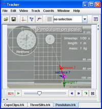

This video of a pendulum swinging from a scale shows a varying tension in the cord. The theoretical tension and weight vectors have been drawn at several positions and added to obtain the net force.
